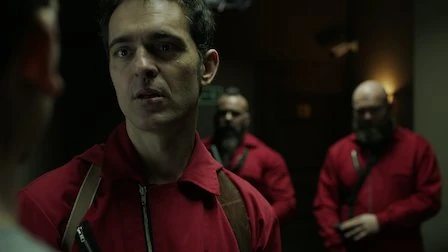
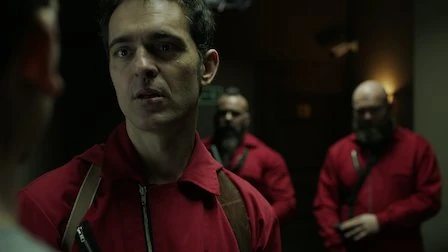

Bella Ciao
La Casa de Papel é uma série de televisão de drama policial espanhola criada por Álex Pina. A trama traça dois assaltos muito preparados
liderados por um homem
conhecido como
O Professor Álvaro Morte, um
na Casa da Moeda Real da Espanha e outro no Banco Central da Espanha. A série foi inicialmente planejada
como uma minissérie de 15 episódios dividida em duas partes, a primeira com nove episódios e a segunda
com seis. Teve exibição original na rede espanhola Antena 3 entre 2 de maio de 2017 a 23 de novembro do
mesmo ano.
Sinopse
A narrativa da série gira em torno de um assalto de vários dias preparado contra a Casa da Moeda Real, localizada na cidade de Madrid, na Espanha. Um homem misterioso, conhecido como O Professor, tinha por objetivo realizar o maior assalto da história. Para executar esse plano ambicioso, recrutou uma equipe formada por oito pessoas com habilidades específicas em suas áreas de atuação, e que por suas histórias pessoais, não teriam nada a perder. O plano previa invadir o local e imprimir 2,4 bilhões de euros. Para isso alcançar tal façanha, os assaltantes precisariam passar 11 dias dentro da Casa da Moeda, e nesse período, além das atribuições relacionadas à produção das cédulas, também precisariam lidar com as forças policiais de elite e 67 reféns.
1ª temporada: Partes 1 e 2 (2017)
Após salvar uma assaltante de um roubo ao banco de ser presa, um homem conhecido como O Professor lhe propõe um assalto incomparável. Assim que reúne uma equipe de oito pessoas, o Professor instruí os assaltantes a roubarem a Casa da Moeda da Espanha, localizada na cidade de Madrid na Espanha. Os oito ladrões têm o nome código de distintas e aleatórias cidades ao redor do mundo: Tóquio, Moscou, Berlim, Nairóbi, Rio, Denver, Helsinque e Oslo. Vestido com macacões vermelhos com uma máscara do pintor espanhol Salvador Dalí, o grupo de ladrões força 67 reféns imprimirem €2.4 bilhões de euros, para depois fugirem em um túnel secreto. O Professor auxilia o grupo em local externo longe do alcance da polícia e da inspetora Raquel. Durante as partes 1 e 2, os ladrões têm dificuldades em seguir as regras predefinidas dentro da Casa da Moeda e enfrentam violência, isolamento, motim e uma crescente falta de sono.


2ª temporada: Partes 3 e 4 (2019-2020)
Dois a três anos após o assalto na Casa da Moeda da Espanha, os ladrões curtem espalhados em diversos locais. No entanto, quando a polícia Europol captura Rio com um telefone interceptado, o Professor retoma os antigos planos de Berlim de invadir o Banco de Espanha para forçar a Europol a entregar Rio. Ele e Raquel (agora "Lisboa"), que se apaixonaram e são um casal, juntam a gangue incluindo Mónica (agora "Estocolmo") e recrutam três novos membros: Bogotá, Palermo, Marselha, Manila, Pamplona e Logronho. Os ladrões disfarçados esgueiram-se para o banco fortemente protegido, tomam reféns e, eventualmente, obtêm acesso aos segredos de ouro e de Estado, enquanto o Professor e Lisboa estão em uma van em movimento para se comunicar com os ladrões e a polícia. Uma brecha no banco é impedida, forçando a polícia, liderada pelo coronel Luis Tamayo e pela inspetora grávida Alicia Sierra, a liberar Rio para os ladrões.
3ª temporada: Parte 5 - Vol. 1 & Vol. 2 (2021)
O Professor acaba sendo encontrado por Alicia Sierra, mas a gravidez e as acusações contra a policial fazem ela refletir em continuar com seu plano de entregar o líder do grupo de ladrões ou se juntar aos mesmos. Uma ameaça surge entre os reféns: uma rebelião instigada por Arturo Roman, ex-amante de Estocolmo antes do primeiro assalto na Casa da Moeda, coloca em risco a segurança de todos no prédio. Mesmo tentando lidar com a ameaça de Arturo dentro do banco, os ladrões também tem que lidar com cinco militares que invadem o local com a ajuda de Gandía, o responsável pela morte de Nairóbi que desestabilizou o grupo por completo. Nesse cenário complicado, uma batalha caótica com armamento pesado se inicia dentro do Banco de Espanha forçando os assaltantes lutarem ferozmente por suas vidas.
-Imagens abaixo
 

Aquisição da Netflix
A Netflix adquiriu os direitos globais de streaming no final de 2016. O serviço de streaming readaptou a duração dos episódios aumentando-os para 22 episódios no total e dividiu a minissérie completa em duas partes, a primeira com 13 episódios e a segunda com 9. A primeira parte foi lançada no catálogo da Netflix em 20 de dezembro de 2017, seguida pela segunda parte em 6 de abril de 2018. Em abril de 2018, a Netflix renovou a série com um orçamento significativo para mais 16 novos episódios no total. A parte 3, com oito episódios, foi lançada em 19 de julho de 2019. A parte 4, também com oito episódios, foi lançada em 3 de abril de 2020. Um documentário envolvendo os produtores e o elenco estreou na Netflix no mesmo dia, intitulado Money Heist: The Phenomenon (La casa de papel: El Fenómeno). Em julho de 2020, a Netflix renovou a série para uma quinta e última parte com 10 episódios. A quinta parte foi dividida em subpartes chamados de "volumes", onde o volume um foi lançado em 3 de setembro de 2021 e o volume dois em 3 de dezembro do mesmo ano, finalizando a série.
Veja o trailer completo
Filmagens
A série foi filmada em Madrid, Espanha. Filmagens significativas das partes 3, 4 e 5 também foram
filmadas no Panamá, Tailândia, Itália (Florença) e Portugal (Lisboa). A narrativa é contada em tempo
real e depende de flashbacks, saltos no tempo, motivações ocultas dos personagens e um narrador não
confiável para a complexidade. A série subverte o género roubo ao ser contada da perspectiva de uma
mulher, Tóquio
Úrsula Corberó, e ter uma forte identidade espanhola, onde a
dinâmica emocional compensa o crime estratégico perfeito.
A série recebeu vários prêmios, incluindo melhor série dramática no 46º
Prêmio Emmy Internacional, bem como aclamação da crítica por seu enredo sofisticado, dramas
interpessoais, direção e por tentar inovar a televisão espanhola. A canção italiana antifascista Bella ciao, que toca várias vezes ao longo da série, tornou-se um
sucesso de verão em toda a Europa em 2018. Em 2018, La casa de papel era a série em língua não-inglesa
mais assistida e uma das mais assistidas séries em geral na Netflix, com uma ressonância particular
vinda de telespectadores da Europa mediterrânea e de latino-americanos.